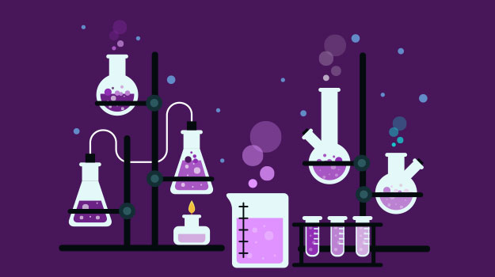

School-Course

Maths
Physics

"In the bustling halls of academia, school exams stand as rites of passage, weaving the fabric of our educational journey. Beyond the ink on paper, they are the crucibles of our understanding, where lessons come alive, and curiosity finds its voice. Each exam is a chapter, etching tales of resilience, growth, and the evolving tapestry of knowledge. Through the ebb and flow of test papers, we discover not only facts and figures but the enduring essence of perseverance and the joy of uncovering the unknown. As students, we are not merely examined; we are sculpted, refined, and shaped by the challenges and triumphs of school exams—each one a milestone on the path to enlightenment."
"In the corridors of 11th and 12th grades, academic exploration takes center stage. Exams become compass points, guiding us through the intricate terrain of specialized knowledge and deeper understanding. These years mark a transformative chapter, where students not only grasp the complexities of subjects but also hone critical thinking skills. With each exam, we ascend the ladder of education, scaling new heights of intellectual curiosity. The 11th and 12th-grade exams are more than assessments; they are crucibles of growth, shaping individuals who emerge resilient, informed, and ready to embrace the challenges that higher education and the professional world will present. It's a period where scholarly pursuits and personal development converge, laying the foundation for a future enriched by both academic achievement and life's broader lessons."
"In the realm of competitive exams, every question is a challenge, and every answer is a triumph. These exams stand as gatekeepers to future aspirations, where dedication meets opportunity. Beyond the pages of test booklets, they symbolize the culmination of relentless preparation, the pursuit of excellence, and the quest for knowledge that extends beyond classroom walls. Competitive exams propel individuals into a league of high achievers, transforming them into seekers of success and catalysts for change. As students navigate the intricate web of questions, they emerge not only with scores but with fortified determination, resilience, and a toolkit of skills essential for navigating the competitive landscape of life. It's not just an exam; it's a stepping stone toward a future where ambition meets accomplishment."